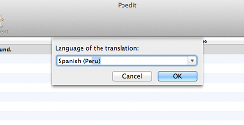

Translation¶
Important
Please check our FAQ , most probabaly there is already an answer to your question. If you didn’t find what you need, please contact us at support@codefactory47.com
All themes from Codefactory47 come translation-ready. Instead of making you create a file containing the human-readable text from a particular theme, we’ve included that file with the theme itself. All that’s left is performing the actual translation, which is where you (or a professional translator) come(s) in.
We’re about to show you how to translate our themes. But first, let’s examine the three types of files
involved in the translation process: .pot, .po, and .mo.
Files that enable translation
Here’s a quick rundown of the three file types and what they contain:
.pot: This file is a “portable object template” that contains all of the text to be translated. Since it’s just a template, it serves as the basis for your translation. It doesn’t contain the translations themselves..po: The “portable object” file contains the original text and the translations. It’s the file we’re about to show you how to edit..mo: This is the “machine object file.” When your translation is complete, you will convert or export your .po file to this file type so that WordPress can use it.
Now let’s go over how to translate one of our WordPress themes to another language. Using Make as an example, we’ll show you how to translate the theme to Spanish – Peruvian Spanish, to be precise!
Translating our themes
Every theme from Codefactory47 comes with a .pot file. If you’re not translating one of our themes and you need to
generate a .pot file for a different theme, refer to this primer in the WordPress Codex. Let’s get started
by downloading a free translations editor.
1. Download and open Poedit¶
There are several translations editors out there, some of which we’ll consider toward the end of this article. Poedit has been around for several years and is a favorite among developers and translators in the WordPress community. It’s also free to use, which eliminates a major barrier to entry for first-time translators.
Go ahead and download Poedit now. When the download completes, unzip the file and open the application. You will see this screen:
2. Open your theme’s .pot file in Poedit¶
Click the “Create new translation” option in Poedit and browse your hard drive for a
local copy of the .pot file for your theme.
You should be able to find it in the folder titled “languages” within the theme folder.
If you didn’t save a local copy of your theme, don’t worry! You can download it from the members’ area of our site.
3. Select a language¶
Poedit saves your translation according to the language and an associated country (for localization). Just begin typing the language and Poedit will fill it in for you. After you’ve entered the language, open a set of parentheses and enter the name of the country.
The resulting .po file will be titled according to abbreviations for the language and associated country.
In our case, we’re using Peruvian Spanish, so our file will be es_PE.po. A Uruguayan Spanish translation would
be es_UY.po, and a Vietnamese translation would end up being vi_VN.po. Makes sense, right?
Poedit creates these extensions automatically, but here’s a lengthy list of country and language codes if you’re interested.
4. Perform the translations¶
Here’s where your language skills come in! Go through every line of human-readable text in your theme and translate
it to the target language. Remember, the .pot file has already compiled everything you need to translate.
That’s how those lines of text got there.
Just highlight each line, one by one, and enter the translation in the box in the bottom left corner of the Poedit interface.
5. Save translations in .po and .mo form¶
When you save your new .po file from Poedit, the application automatically generates an additional .mo file
and saves it in the same directory on your hard drive.
After saving the files to your hard drive, add a the realtyspace prefix to them, so for example
es_PE.po becomes realtyspace-es_PE.po
es_PE.mo becomes realtyspace-es_PE.mo
After renaming the files, use an FTP client to upload both files to the wp-content/languages/themes folder in your
theme’s directory. Now you just have to tell WordPress to use the translation you created!
Next steps
Translating WordPress themes is a multifaceted topic. Here, we’ve focused exclusively on how people using our themes can translate them from English to a different language or local vernacular using a popular translations application. But that’s just one small piece of a larger whole – the issues related to WordPress translations are numerous!
The following resources will help you gain additional perspective on translations in WordPress. A vast array of skills and tools comes into play, and learning how it all fits together is fascinating, if not also practical. Be sure to check out:
Note
After translation url parts, the WordPress permalink cache should be dropped. The simplest way is to go to Settings / Permalinks and click on Save.
- Barry van Someren’s tutorial on translating WordPress themes with the Google Translator Toolkit.
- Poedit isn’t the only translations application out there, and many WordPress users might find Google’s solution more adequate, especially if they’re already using Google Apps. Unlike Poedit, Google uses its proprietary translation technology to automatically translate the English text from a
.potfile. You’ll still have to correct the errors, but this advantage could save you a lot of time.
- WordPress’s primer on translating the WordPress core
- Long story short, you can translate the WordPress core if you want. However, as of WordPress 4.0, it’s possible to choose a language as part of your WordPress installation.
- WP-Translations
- This community-based translation effort seeks to address, among other things, a major problem that can occur when theme authors update themes: text string changes. Adding, removing, or modifying text strings can render a translation obsolete. WP-Translations tries to mitigate this issue by actively connecting translators who will keep translations current in accordance with theme updates. It also maintains a database full of translations for common text strings – so it could save you lots of time!
- WPMUDEV’s roundup of translation plugins
- Editing
.pofiles really just scratches the surface of all things WordPress translation-related. This list includes plugins that automate the process we just went over (most are premium plugins) and deliver various enhancements that can help you appeal to an international audience.